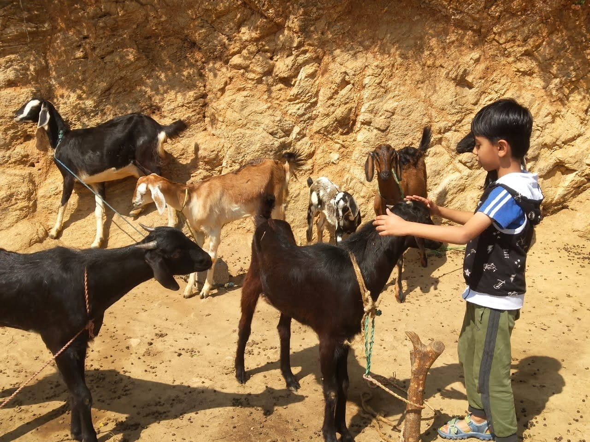

The Shepherd’s Age - What a Wrong Answer Taught Me About Teaching Math
It has been a practice with me to start middle school mathematics with a revision of fractions, decimals and percentages. The presence of these three kinds of numbers, their inter-convertibility, the structure of these numbers and the rules for using them — all of this is fascinating, and understanding it properly requires students to hold the same idea in several different forms at once.
So with this fresh set of five middle school students, we started with fractions, moved on to decimals, and were about to start on percentages when we ran into a term break. Naturally, we gave homework.
The students came back yesterday and My co-teacher Nandana and I started going through their work. We first looked at the doubts they raised, and then examined a few other problems and solutions together. Three reasons seemed to explain most of the trouble.
The first was simple difficulty with the language of the question — new or unfamiliar words, sentences that were a little more convoluted than they needed to be. The second was that the students were probably not pausing to think about how a problem could be solved before diving in. And the third, which follows from the second, was that since they hadn’t thought it through, they reached for some operation and produced an answer, with no particular reason for choosing that operation over another.
We talked once more, as I do every few weeks, about showing steps and reasons while doing math — about making one’s thinking visible rather than just producing a number. We went over how understanding a situation and making sense of it matters more than manipulating digits to arrive at an answer.
But this is worth dwelling on a little, because it isn’t just a habit of five children in one classroom. Math, as it is generally taught, moves straight from a question to a method to an answer. Students are rarely taught how to read a problem, decide what it is actually asking, consider the ways it might be solved, and then check whether the solution they’ve landed on actually answers that question. Most children — most adults too, if we’re honest — will look at the digits available and reach for whichever operation seems most plausible, and treat arriving at an answer as the real achievement, rather than understanding the problem. There is a kind of compulsion at work: a question, once asked as part of instruction, is assumed to have an answer, and the job is to find it, more or less regardless of the underlying logic.
I have long known this as the “shepherd’s age” problem, and it turns out to have a long research history. Kurt Reusser, in a 1986 paper on word-problem comprehension, calls this same tendency the “always-answering schema” — a phrase he borrows partly from Langeveld’s (1984) observation that when children are very young, their understanding of a question is governed less by its content than by a rule-like communicative expectation that a question simply requires an answer (Reusser, 1986). Reusser ran a version of exactly this test on schoolchildren: ninety-seven first- and second-graders were told there were 26 sheep and 10 goats on a ship, and asked how old the captain was. Seventy-six of them answered anyway, using the numbers in front of them (Reusser, 1986). A version closer to what I gave my own students — 125 sheep and 5 dogs, “how old is the shepherd?” — appears in Reusser’s paper as well, complete with a transcribed protocol of a child ruling out addition and subtraction as producing “too big” a number, before settling, with visible satisfaction, on 125 ÷ 5 = 25 as a plausible age (Reusser, 1986).

I asked my own five students the same question — 125 sheep, 5 dogs, how old is the shepherd — mostly out of curiosity about whether fifty years and a different country would change anything. It didn’t, really. Three of the five said 25; the other two guessed 5 and 50 without offering much reasoning. The three who said 25 had a shared logic: a person’s age is unlikely to be over 100, and dividing the larger number by the smaller was the only one of the four operations that landed comfortably below that ceiling. It is, on its own terms, a perfectly coherent piece of reasoning. It is just reasoning about the wrong thing — about which arithmetic operation produces a number that looks like an age, rather than about whether the question has anything to do with sheep and dogs at all.
Reusser’s paper collects several other versions of this same phenomenon, and reading them was oddly reassuring, in the way it is reassuring to learn that a problem you thought was peculiar to your own classroom is in fact a well-documented feature of how children (and, transcripts suggest, quite a few adults) handle textbook problems. In one of his studies, a group of fourth- and fifth-graders were given a deliberately unsolvable problem about boats entering and leaving a port, where the numbers given did not actually add up to a determinate answer. A hundred out of a hundred and one children produced a numerical answer anyway; only five, even after being explicitly asked to comment on the task, said anything was wrong with how it had been posed (Reusser, 1986). Reusser traces this back to what Hoermann (1976) called “sense constancy” — a basic assumption students bring to any classroom text that it must be meaningful, unambiguous, and solvable, because that is what classroom texts always are. Reusser goes further and argues that this expectation is not really a fact about problems at all — it is a fact about the classroom as what Bruner (1985) called a “format” and what Schoenfeld (1983) called a social-cognitive matrix: a setting with its own tacit contract, in which producing an answer, and producing it promptly, is itself part of what is expected of a student, almost independent of whether the answer means anything.
There is an older thread running through this too. Wertheimer, writing in 1945, describes asking a class whether they were sure a result he had shown them was correct, and being met with blank incomprehension — not because the students didn’t understand the mathematics, but because the question of whether a teacher-sanctioned solution could even be doubted had never occurred to them as a question worth asking (Wertheimer, 1945, as cited in Reusser, 1986). That is close to what I see when I ask my students to explain their steps and they look faintly puzzled, as though the request itself were the strange part, not the arithmetic.
None of this is a case against giving children word problems, or against expecting them to get to an answer. It’s a case for treating the getting-to-an-answer part as only half the job. Reusser’s own suggestion — echoed in things I’ve been groping towards on my own — is that we need more “situation problems”: problems that describe an incomplete or genuinely ambiguous situation, rather than a fully-specified equation dressed up in a story, so that reaching an answer actually requires the sense-making step rather than allowing students to route around it (Reusser, 1986). An occasional deliberately unsolvable or under-specified problem, asked without warning, might do more for a student’s mathematical judgement than another ten well-behaved ones that work out evenly.
For now, what I can do with five students and a whiteboard is keep asking “why did you divide?” as often as I ask “what did you get?” and hope that the persistence pays off eventually.
References
Hoermann, H. (1976). Meinen und Verstehen [To mean — to understand]. Suhrkamp. (As cited in Reusser, 1986.)
Langeveld, M. J. (1984). Grundsaetzliches — bezogen auf Piagets Kinderpsychologie. In W. Lippitz & K. Meyer-Drawe (Eds.), Kind und Welt: Phaenomenologische Studien zur Paedagogik (pp. 149–158). Forum Academicum. (As cited in Reusser, 1986.)
Reusser, K. (1986). Problem solving beyond the logic of things: Textual and contextual effects on understanding and solving word problems [Paper presentation]. Annual Meeting of the American Educational Research Association, San Francisco, CA. (ERIC No. ED270327)
Schoenfeld, A. H. (1983). Beyond the purely cognitive: Belief systems, social cognitions, and metacognitions as driving forces in intellectual performance. Cognitive Science, 7, 329–363. (As cited in Reusser, 1986.)
Wertheimer, M. (1945). Productive thinking. University of Chicago Press. (As cited in Reusser, 1986.)